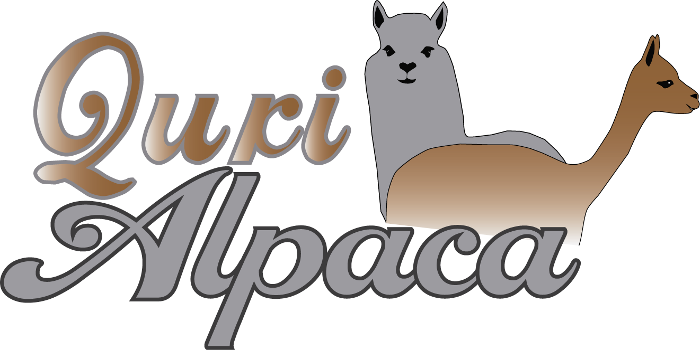

Preparando cuadrícula de precisión...
TelappEs una herramienta para crear patrones y replicarlos en telar.
Desarrollado por: Pacha-Ltda.
Uso táctil: Lienzo programable, con simteria espejo para mejor rendmiento